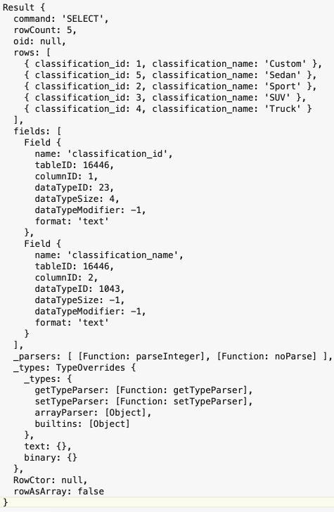
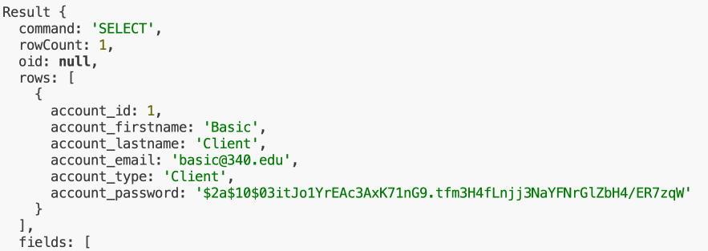

Understanding Data Results
Introduction
In the previous activity, you ran a query against the classification table in the database. Do you know what you got back? In this activity, you will be introduced to the concepts of multiple versus single record result sets, and how to access the returned data.
Querying Many Items
As mentioned above, in the previous activity, you wrote a SQL query, as part of a model-based function, to get the data from the classification table. The function, with the query, looks like this:
/* ***************************
* Get all classification data
* ************************** */
async function getClassifications(){
return await pool.query("SELECT * FROM public.classification ORDER BY classification_name")
}
What actually is returned? Let's find out.
- If you opened the index.js file in the utilities folder.
- And added a new, empty line between the second and third line of the getNav function.
- In the new line, you typed the following code: console.log(data)
- When the function is called and the data returned, it will be written to the server console and can be seen in the built-in VS Code terminal. It would look like the illustration below.
- 
- It is an object (note the curly braces surrounding everything). What is most important, is the "rows" area.
- "rows" is the name associated with an array, which holds objects of data from the classification table.
Just the array, please!
All we are interested in, is the array and the objects in it. So, we need to take steps to isolate the array. Looking back into the getNav function, you'll notice three lines below where the console.log() was added, says data.rows. This indicates that within the data object, we are only interested in the "rows" array.
While this seems easy, and it is, it remains a critical concept.
The Point
When querying the database for multiple items, an object will be returned. The items will ALWAYS be stored in an array named "rows" within the object! When you want to access the data, you must do so via the "rows" array.
Querying a Single Item
Later, you will query the database to find the information for a single account. What is returned then?
I hope you will not be surprised to know that an object is returned. Here is a partial capture of the data that is returned:

Just as before, the data that we are interested in, is found in the "rows" array, but there should only be a single element within the array. Hopefully, you remember that arrays are "zero indexed", meaning that the first element of the array is identified using the number zero.
What's Your Point?
When a query is made for a single item, it too is returned in the "rows" array of the object. But, since there is only one, you have to provide its numeric index. For example, if the object is called "data", then you would access the single item as data.rows[0] - meaning, in the data object, find the rows array and access the first (and hopefully only) element in the array.
Conclusion
To help you understand how to access data, based on the query, is it important to remember:
Multiple Items Returned
[objectName].rows - (e.g. classificationData.rows.foreach(.....))
Single Item Returned
[objectName.rows[0] - (e.g. accountData.rows[0]), will provide access to the single object in the rows array.
Comprehension Question
Let's assume that you fully understand the concepts just presented. If you only wanted to return the actual array to the controller from the model, when querying multiple items, or just the single element from the array to the model from the controller, when querying a single item. How would you modify the model function to do this?
Comprehension Question Solution
Expand the accordion to view the solution.
async function getClassifications() {
const data = await pool.query(
"SELECT * FROM public.classification ORDER BY classification_name"
)
return data.rows
}
async function getClassificationById(classification_id) {
const data = await pool.query(
"SELECT * FROM public.classification WHERE classification_id = $1 ORDER BY classification_name",
[classification_id]
)
return data.rows[0]
}